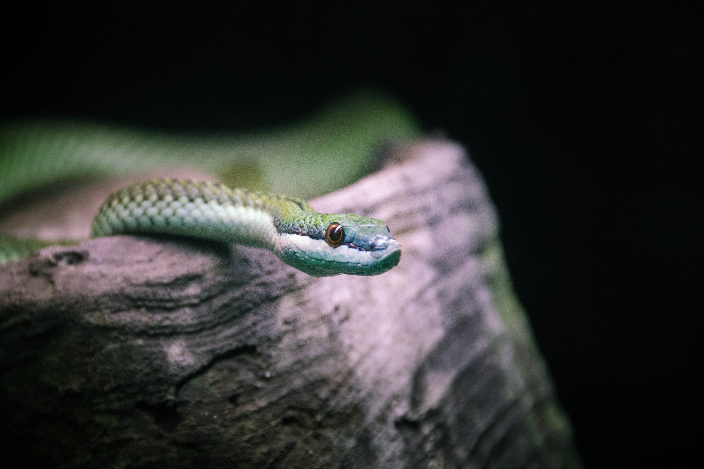
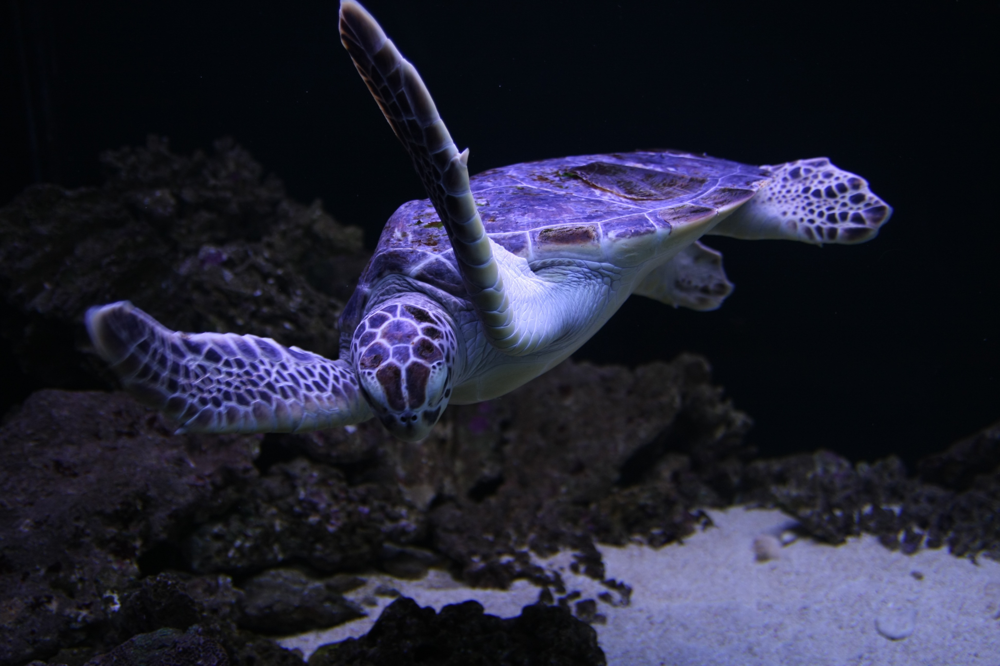

Ancient Survivors - Reptiles have lived on Earth for millions of years, adapting to deserts, forests, rivers, and oceans. Their evolutionary resilience makes them one of the most successful vertebrate groups.
Cold-Blooded Strategy - Reptiles are ectothermic, meaning they rely on external heat sources like the sun to regulate body temperature. This allows them to survive in diverse environments from jungles to deserts.
Scaly Armo - Their dry, scaly skin acts as protection, preventing water loss and shielding them from predators. These keratinized scales are key features in reptile identification.
Eggs and Live Birth - Most reptiles lay amniotic eggs on land, but some species of snakes and lizards give birth to live young, showing reproductive diversity.
Ecological Importance - Reptiles help maintain ecological balance by controlling insect and rodent populations and serving as both predators and prey.

Snakes smell with their tongues - Snakes collect scent particles using their tongues and analyze them through the vomeronasal organ, helping them detect prey, predators, and mates.
Some snakes can still bite after death - Certain venomous snakes may still show reflex actions shortly after death due to a nervous system that can function without brain input for a short time.
Snakes swallow prey whole - Snakes have extremely flexible jaws that allow them to consume prey much larger than their head.
Snakes shed their skin regularly - Snakes periodically shed their skin to allow growth and remove parasites or damaged outer layers.
Some snakes give live birth - While many lay eggs, species like boa constrictors and rattlesnakes give live birth as an adaptation to colder or harsher environments.

Draco lizards can glide between trees - The “Flying Dragon” lizard uses rib-supported membranes (patagia) to glide through forest canopies in Southeast Asia.
Some lizards can detach their tails - Through autotomy, lizards like geckos can drop their tails to escape predators, and the tail continues moving to distract threats.
Chameleons change color for communication - Chameleons mainly shift colors to signal mood, stress, temperature, or mating signals—not just camouflage.
Komodo dragons are powerful apex predators - Komodo dragons can hunt large prey and are known for their strong bite and opportunistic feeding behavior, including cannibalism in rare cases.
The smallest reptile in the world is a lizard - Brookesia nana, a tiny chameleon species from Madagascar, is one of the smallest known reptiles, measuring just over a centimeter.

Turtle shells are part of their skeleton - A turtle’s shell is made from over 50 fused bones, including ribs and spine, making it a living part of their body.
Sea turtles migrate thousands of kilometers - Many sea turtles travel vast distances but return to the same beaches where they were born to lay eggs.
Temperature determines turtle sex - In many turtle species, incubation temperature determines whether hatchlings become male or female.
Some turtles can breathe underwater in special ways - Certain species, like the Fitzroy River turtle, can absorb oxygen through specialized tissues near their cloaca.
Sea turtles can hold their breath for hours - Depending on activity, sea turtles can stay underwater for long periods, especially while resting or sleeping.

Crocodiles cool down by opening their mouths - Crocodilians use mouth-gaping to release heat since they cannot sweat, similar to how dogs pant.
They have one of the strongest bite forces - Crocodiles have extremely powerful jaws capable of crushing bone and securing prey efficiently.
They perform “death roll” when hunting - Crocodiles spin rapidly in water to tear apart or drown their prey.
Crocodiles replace their teeth throughout life - They continuously grow new teeth, ensuring they never lose their ability to bite and hunt.
Crocodilians are ancient survivors - Their body structure has changed very little for millions of years, making them one of the closest living relatives of prehistoric reptiles.
| © National University - Manila | PSY241